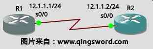

[CCNA图文笔记]-28-思科路由安全浅析
引言
这篇文章简单的介绍一下Cisco路由密码的安全、远程访问的设置、如何用SSH代替Telnet进行安全的登录、日志的记录、不常用服务和端口的禁用等。
文章目录
0×1.思科路由密码安全浅析
对路由器最直接有效的攻击手段就是获取管理密码（vty密码和特权密码等），保护路由器密码安全的方法包括：
设置一个复杂的密码：一个强密码应该具有的特点是"包含数字、包含大写字母、包含小写字母、包含特殊符号"；不要在密码中使用生日格式如:19901203；不要在密码中使用英文字典中最常用的单词如：hello等；不要在密码中包含电话号码、区号、手机号等。因为这些东西能很容易的放入坏人暴力猜解的字典中进行组合，最后就能获得你的密码。
对配置文件中的密码实行加密：在全局配置模式下输入这条命令"service password-encryption"能够对所有密码进行加密，虽然这种加密可以破解，但至少增加了一道防线。
特权密码的设置：创建特权密码应该使用"enable secret"而不是"enable password"。
设置密码最小长度：在全局配置模式下输入"security passwords min-length 12"，可以将密码的最小长度设置成12位。
密码存放：不要将密码随便的记录在一台不安全的计算机的文本文件里；如果你将密码写在纸上，在密码更改以前不要随便将这张纸丢进垃圾桶，因为坏人可以从垃圾桶翻出很多敏感信息，其中就包括你的密码，或者你习惯的编码方式。
0×2.如何限制远程访问
可以使用ACL来设置仅允许管理员的IP登录这台设备的VTY终端：
R1>en R1#conf t /*启用路由密码加密，会将所有配置中的明文密码都加密存放*/ R1(config)#service password-encryption /*设置密码最小长度是12*/ R1(config)#security passwords min-length 12 /*如果密码长度不够将不会配置成功*/ R1(config)#enable secret 123 % Password too short - must be at least 12 characters. Password configuration failed R1(config)#enable secret www.qingsword.com /* * 使用ACL允许192.168.1.200访问，这里演示使用了一个简单ACL， * 如果使用其他网管软件管理路由，可以使用复杂ACL允许管理IP和软件相应的端口。 */ R1(config)#access-list 1 permit 192.168.1.200 R1(config)#line vty 0 4 R1(config-line)#password ccna /*因为前面设置了密码最小长度是12个字符，所以这里报错了。*/ % Password too short - must be at least 12 characters. Password configuration failed R1(config-line)#password www.qingsword.com R1(config-line)#access-class 1 in /*将ACL 1应用于VTY*/ R1(config-line)#login R1(config-line)#end
这样设置后，VTY 0-4号线路就只有IP是192.168.1.200这个用户可以连上了。
0×3.如何使用SSH代替Telnet
Telnet使用明文的方式传输密码，在Internet上使用明文传输密码是非常不安全的，可以通过SSH（Secure Shell）远程登录和管理路由，SSH传输的时候使用RSA加密，就算数据包被捕获，也是RSA加密后的数据包。
下面在GNS3中来做一下这个实验，设备连线与IP地址如下图（图1）所示，在R1上配置允许ssh连接的vty线路：
R1配置：
Router>en Router#conf t /*一定要改变路由默认的名称并且配置一个域名，用来生成密钥*/ Router(config)#host R1 R1(config)#ip domain name www.qingsword.com /*生成rsa非对称密钥，可以看到输出中key的名字就是我们上面配置的路由名称和域名的组合*/ R1(config)#crypto key generate rsa The name for the keys will be: R1.www.qingsword.com Choose the size of the key modulus in the range of 360 to 2048 for your General Purpose Keys. Choosing a key modulus greater than 512 may take a few minutes. /* * 输入密钥长度，直接回车则使用默认长度， * 长度可以是360到2048。 */ How many bits in the modulus [512]: % Generating 512 bit RSA keys, keys will be non-exportable...[OK] /*配置本地的用户名和密码用于ssh验证登陆*/ R1(config)#username qingsword password www.qingsword.com /*配置vty线路0~4*/ R1(config)#line vty 0 4 /*仅允许ssh登陆*/ R1(config-line)#transport input ssh /*使用本地创建的用户密码验证*/ R1(config-line)#login local R1(config-line)#exit /*ssh选项，连接ssh后30秒未操作则超时*/ R1(config)#ip ssh time-out 30 /*允许三次密码错误尝试*/ R1(config)#ip ssh authentication-retries 3 /*配置特权密码*/ R1(config)# enable secret www.qingsword.com /*配置接口IP*/ R1(config)#int s 0/0 R1(config-if)#ip add 12.1.1.1 255.255.255.0 R1(config-if)#no shut R1(config-if)#end
R2配置：
R2(config)#int s 0/0 R2(config-if)#ip add 12.1.1.2 255.255.255.0 R2(config-if)#no shu R2(config-if)#end /*完成后确保R2可以ping通R1，然后在R2上使用ssh命令登陆R1，-l参数后面是R1上创建的用户名*/ R2#ssh -l qingsword 12.1.1.1 Password: www.qingsword.com R1>/*登陆成功*/ /*大家可以尝试下R2上telnet连接R1，如果配置无误此时telnet是无法连接的*/
0×4.如何记录日志
通常使用Console端口对路由进行配置时，可以看到来自路由的监控提示消息，比如开启或关闭一个端口就会出现相应的提示，但是通过VTY远程登录的时候却看不到这些提示，也看不到Debug命令的输出，这是因为虚拟终端默认情况下是关闭监控的，可以使用下面的命令来打开监控：
/*接着上面的实验，在R2 ssh登陆R1后，在R1上创建一个回环接口*/ R2#ssh -l qingsword 12.1.1.1 Password: www.qingsword.com R1>en Password: www.qingsword.com R1#conf t R1(config)#int lo 0 /*切换到R1的控制台，控制台中出现了下面这种新接口启用的输出，但是在ssh或telnet登陆窗口却看不到这样的输出*/ *Mar 1 00:21:00.599: %LINEPROTO-5-UPDOWN: Line protocol on Interface Loopback0, changed state to up /*在ssh登陆窗口，使用下面的命令打开远程登录窗口的监控提示*/ R1(config)#exit R1#terminal monitor % Console already monitors /*再次创建一个回环接口，这一次ssh窗口也出现了提示*/ R1#conf t R1(config)#int lo 1 *Mar 1 00:23:55.303: %LINEPROTO-5-UPDOWN: Line protocol on Interface Loopback1, changed state to up /*关闭远程终端监控功能*/ R1(config)# end R1#terminal no monitor
下面是一些和日志记录有关的命令，仅供参考：
/*关闭日志记录*/ R1(config)#no logging on /*开启日志记录*/ R1(config)#logging on /*设置日志记录缓存，后面的7是最高级别，记录所有信息*/ R1(config)#logging buffered 7 /*给记录的debug消息添加时间戳，单位精确到毫秒*/ R1(config)#service timestamps debug datetime msec /*给记录的log消息添加时间戳，单位精确到毫秒*/ R1(config)#service timestamps log datetime msec R1(config)#end /*显示本地缓存中的日志信息*/ R1#show logging
路由缓存的空间是有限的，一般的做法是配置一台日志服务器，将路由和交换机的日志信息发送到服务器上，这样可以避免路由重启或者其他原因导致日志信息的丢失。
0×5.如何禁用思科路由不必要的服务和端口
可以使用下面这条命令来手动或者自动的配置路由，禁用一些不必要的服务和端口：
/*不带参数，进入交互配置模式，根据提示设置即可*/ Router#auto secure /*还有一种简便模式，非交互式，使用的是思科推荐的安全配置（除非你知道自己在做什么，否则不要随意在真实环境中配置下面的语句）*/ R1#auto secure no-interact